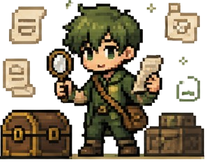

i. Creative
I
Creative Story Generation
Build a multi-stage narrative from sparse emotional input: premise, setting, characters, acts, and the opening scene — fluent, novel, dramatically structured.
Narra·Gym is a quiet evaluation environment for large language models asked to hold a story in their hands — to listen, to remember, to care, and to keep the world alive across many turns.
most benchmarks ask
a model to answer.
ours asks it to stay.
Existing LLM benchmarks emphasize static prompting — a single question, a single answer — and therefore under-measure the capabilities required for long-horizon interactive storytelling.
Narra·Gym is an executable evaluation environment for testing LLMs as interactive narrative agents along five coupled dimensions: creative story generation, long-context state tracking, character simulation, empathic personalization, and story-grounded interactive artifact generation.
Inside a live interaction loop, the environment orchestrates five-stage story construction, multi-resolution narrative memory, reflection-guided planning, anti-stagnation control, novelty-constrained artifact synthesis, and fail-soft structured generation. Together, these choices turn interactive storytelling from a loosely specified demo into a reproducible Gym for studying persistent, emotionally aware, story-driven language agents.
Narra·Gym doesn't test isolated competence. It tests whether a model can live inside a story — creative, attentive, in-character, empathic, tangible — for as long as the reader needs it to.
Build a multi-stage narrative from sparse emotional input: premise, setting, characters, acts, and the opening scene — fluent, novel, dramatically structured.
Preserve consistency across many turns — unresolved tensions, revealed clues, scene transitions, and user decisions remain quietly available as actionable context.
Keep voices stable, distinguishable, and situationally appropriate while they still evolve with the plot.
Infer emotional context, align narrative developments with the reader's underlying concerns — without collapsing into generic therapeutic language.
Decide when a letter, a map, a cipher, a radio dial belongs in the story — and then shape it into a tangible, interactive prop grounded in the narrative.
Each turn is orchestrated by a small company of named roles. Together they build the world, hold the thread, keep the plot honest, imagine what comes next, and give the story something the reader can touch.
Gathers sparse emotional input and builds a whole world — premise, setting, cast, act structure, and opening scene.
Keeps three temporal resolutions of the story — the verbatim now, rolling summaries, and the latent state that lasts forever.
Watches for eloquent stalling. Escalates from gentle nudge to mandatory shift when the plot is only pretending to move.
Reflects before each turn — unresolved tensions, user interests, pacing, and where the story ought to go next.

Shapes story state into letters, maps, ciphers, radio dials — and refuses to repeat itself through tag-based novelty filtering.
Before a single turn, the agent moves through a logged lifecycle so researchers can pinpoint exactly where things stabilized — or drifted.
Title, premise, theme, emotional undercurrent, and protagonist objective — the narrative seed, separate from its later realization.
A world and a scene frame, translating emotional context into a concrete place — not decorative metadata, but runtime state for tracking continuity.
Protagonist and supporting cast, each with backstory, personality, and speech style. Names are normalized into stable identifiers for later attribution.
A multi-act outline refined through a critic-then-refiner loop. The critic scores novelty, tension, and pacing; the refiner rewrites weak acts. Failures fall back softly.
Scene prose, initial dialogue, and branching choices. The output already carries message history, hidden story elements, and active tensions — the interaction loop begins from structured state, not free-form text.
What does a session actually feel like? Below — a little notebook left open on the desk, with a small window where the game plays itself: a title screen, a feeling typed into a form, five quiet stages of construction, a scene, a transition, and an artifact the reader can hold.
a small window
onto the story
as it is being told.
Evaluations for Narra·Gym are currently in careful preparation. When the numbers are ready, they will quietly arrive here — a compact signal board refined over time. Until then, take a breath; the page is listening.
| # | Model | Creativity | Memory | Voice | Empathy | Artifact | Overall |
|---|---|---|---|---|---|---|---|
| i | |||||||
| ii | |||||||
| iii | |||||||
| — rows will fill as model signals arrive — | |||||||
If Narra·Gym helps your research, please cite the manuscript. This placeholder will be updated after public release or review.